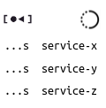
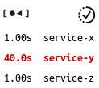
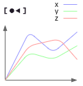
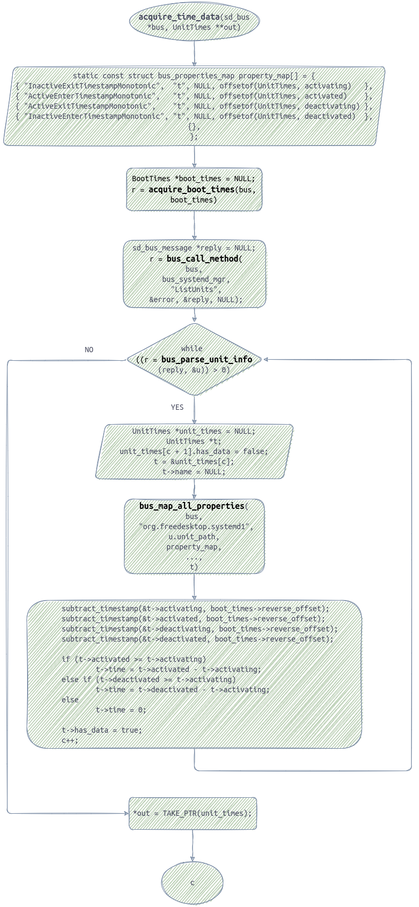
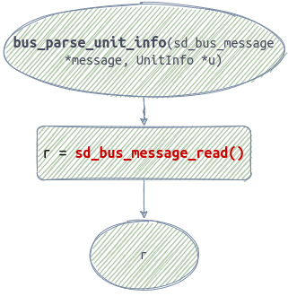

Laptop bootloading time extreme growth. SystemD
If you have Linux installed on your laptop you may once encounter OS is bootloading abnormally slow what is happened in my case and it has taken around 44 seconds where 26 seconds in the userspace level. I've noticed after pressing the power button on seating in a cafe that my laptop is showing me a bootloader logo a way too long. That's the starting point i went to figure out what the hell is this and how SystemD works as it's responsible for such kind of a job.
Thanks for this sort of the problems that lead us to dig into the mechanisms our modern low level software is based on. Such a fascinating technical journey (^o^)
I suppose you have heard the systemd term and have a general understanding of the root process in Linux, it is necessary in terms of who we have to ask for information about bootloading process.
What a cause is. How to reveal it

Obviously, first question appeared in my mind is how to list ran systemd's services during a bootloading phase. You, for sure, will get to the two reports systemd-analyze, systemd-analyze blame as me while answering the question. They display a list of the services, their running time and much more.
In my case the list was following:
$ systemd-analyze
Startup finished in 4.782s (firmware) + 5.726s (loader) + 7.575s (kernel) + 26.033s (userspace) = 44.118s
graphical.target reached after 10.685s in userspace
$ systemd-analyze blame
10.321s apt-daily.service
6.793s NetworkManager-wait-online.service
6.591s apt-daily-upgrade.service
1.579s docker.service
1.569s snapd.service
1.501s dev-nvme0n1p3.device
1.098s vboxdrv.service
...
Output lines are reduced to those are longer than 1 second.
As we see there a few problematic services longer than 6 and 10 seconds along with the shorter ones. It was pretty fast and simple to find it out, no effort at all. I went further asking myself what the couple is about and how to disable them.
Causes are found. Which ones should be disabled

What do i thought about each service listed above? dev-nvme0n1p3.device is a necessary physical SSD device and is putted out from consideration. docker.service is required for my job purposes on every day basis so it is left enabled. Next candidates to consider were snapd.service, vboxdrv.service. I don't use neither SnapD nor VirtualBox therefore they were disabled immediately.
A group of the further candidates was NetworkManager-wait-online.service, apt-daily.service, apt-daily-upgrade.service, what do they do? Aptish services' function is software update checking and upgrading, but why they do start at the bootloading phase? I googled the subject and ended up with it happens seldom. Seldom? To be more concise, these services are running by timer units. This idea i came to by a small research:
$ systemctl list-unit-files 'apt*'
UNIT FILE STATE
apt-daily-upgrade.service static
apt-daily.service static
apt-daily-upgrade.timer enabled
apt-daily.timer enabled
All the existent units were listed by the name pattern. Here we see two timer and service ones and a big hint to say the timers trigger services. Next step was to display a timer config:
$ systemctl cat apt-daily.timer
# /lib/systemd/system/apt-daily.timer
[Unit]
Description=Daily apt download activities
[Timer]
OnCalendar=*-*-* 6,18:00
RandomizedDelaySec=12h
Persistent=true
[Install]
WantedBy=timers.target
Here is an attribute of execution moment, systemd triggers it at OnCalendar=*-*-* 6,18:00, the second service is working by the same mechanic.
Now the wait online service, it waits for network manager daemon to get to a connected state and it is quite useless, when i power on the laptop i don't expect any program to request network. Disabled it.
I filtered out who is who and using the command systemctl mask has done disabling. The command guarantees services don't get awaken by side systemd's units occasionally.
$ sudo systemctl mask NetworkManager-wait-online.service snapd.service vboxdrv.service
The issue is solved, but are the done precautions enough to keep bootloading fast? Blame report doesn't contain chronological statistics therefore i won't be able to examine services' running stats to point an anomaly out.
Is there chronological statistics

All the times we get the statistics it is of the latest bootloading. SystemD's documentation doesn't refer to any information about collecting or keeping it in the log files for an example.
Googling and asking if it is possible to extract chronological data from somewhere didn't put me on a track to discover the issue further. And what can i do? Obviously, to take a look at the source code, that's what i did.
Source code base is too huge and to start code examintion it needs to have a starting point. In this case it is command systemd-analyze blame string is using to search in the SystemD's repository https://github.com/systemd/systemd. Following such a way i got to the starting point definition of the function static int analyze_blame().
Have you eve read C code? it takes quite much time. For the simplification purpose i built a flow chart to visualize a path to the endpoints which should help me to answer the question.
Entire flow chart picture flow-chart-general.png, i left it in a rough state as a goal of depicting a calls chain and finding endpoints has been reached. To read all the source code please go to the it's repo. Here is one from the entire picture:
{kind=link}

Bold calls' names are those i unfolded to get to the endpoints, you may open the entire picture to see them but in addition i leave an excerpt contains one here.

All the high-level calls lead to systemd api such as sb_bus_message_read(), nothing is between start and end calls gave me an idea about a persistent storage of the statistics. In respect of it i made a conclusion the statistics should be collected manually or i have to continue digging into the JournalD's storage capabilities where the found sd_bus* calls receive data from by DBus message protocol.
Afterword
Having bootloading time reduced is enough in my case and implementation of a manual statistics collecting is taking too much time for a low priority purpose but it might be useful.